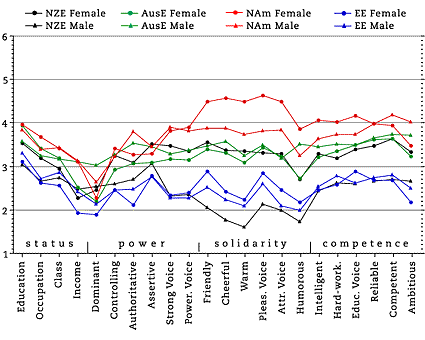
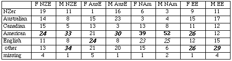
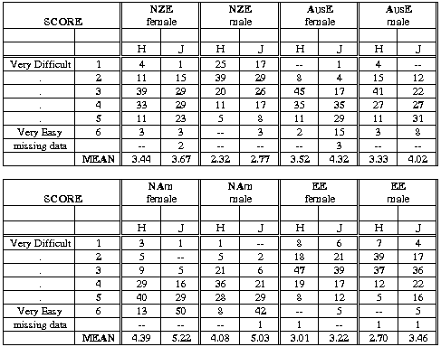

Evaluating English Accents WorldWide Results: HONG KONG
Hong Kong Personality Trait Means 75 Hong Kong Baptist University
students 21 female, 50 male, 4 missing; mean age 20.0 (collected by
Vicky Man)

Hong Kong Students' Accent Guesses Majority/plurality percentage
for each speaker in boldface; Major erroneous guesses
italicised

Points to Note:
In general, guesses for each voice covered a wide spectrum of answers,
with "American" seemingly the focal point (note that "American" here includes
"Black American" guesses). A plurality of the students thought that the male AusE
and the two NZE voices were "American".
Only the two NAm voices were at
all correctly identified (39% and 52%). In this former British colony, the two EE
voices were recognised as such by only 12% (for the female) and 15% (for the
male).
As with the other groups, the two NAm voices were clear leaders
in solidarity traits; they led or tied as well in most traits in the other three
dimensions.
The male AusE voice was usually third- or fourth-ranked,
but was a clear leader in the "dominant" trait.
The EE voices rated
much lower than usual in all traits, particularly the female voice in status and
power and the male voice in solidarity (though not as low as the NZE male). The
large "other" category includes "Scottish" (7%) and "Asian" (11%) for the female
EE; and "Scottish" (15%) and "Asian" (7%) for the male EE voice. Since they were
not recognised as "English" by the great majority of listeners, this does not
seem to be due to any negative feeling about the former colonial administration.
We were able to obtain evaluations (scored on a six-point Likert scale) from
the Hong Kong and Japanese students on the relative ease of understanding of the
eight voices used in our test. The results are presented below. From these, it
is quite clear that the two NAm voices—the female NAm voice in
particular—were perceived of as the easiest to understand by the Japanese
students. These are followed by the two AusE voices and the NZE female voice. The
EE male and female voices follow for the Japanese, with the NZE male in bottom
place.
The Hong Kong students scored themselves somewhat lower on
overall comprehension. For these students, the AusE and NZE female voices are in
third and fourth place, followed by the male Australian. Once again the two
English voices and the NZE male are the most difficult to understand. The
position of the two EE voices at the bottom for Hong Kong as well as Japanese
students is interesting, given the use of RP as a standard for teaching English
in Hong Kong schools for many years.
As the two NAm accents lead in both student groups, familiarity with this accent
through media exposure seems likely to account for its high comprehension rate.
Given our largely successful attempts to control for reading speed and number of
hesitations, it is possible that intonation also plays a considerable part in
comprehension (see The Impact of Intonation).
Clearly more research with different groups at different levels of
English study would repay the effort.
Perceived ease of comprehension of eight voices by Hong Kong
students (H; N = 75) and Japanese students (J; N = 133)

Created by: Owen Baxter,
Modified: 25 Jun 2002, Made with Macintosh